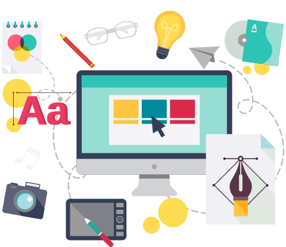

Design gráfico é a área de conhecimento e a prática profissional específicas relativas ao ordenamento estético-formal de elementos textuais e não-textuais que compõem peças gráficas destinadas à reprodução com objetivo expressamente comunicacional. É uma forma de comunicar visualmente um conceito, uma ideia, por meio de técnicas formais. Podemos ainda considerá-lo como um meio de estruturar e dar forma à comunicação impressa, em que, no geral, se trabalha o relacionamento entre imagem e texto. No início do século XXI, a participação do design gráfico expandiu-se para os meios digitais, sendo utilizado na criação de sites, portais eletrônicos, softwares e diversas outras áreas relacionadas ao design digital.
O designer gráfico pode trabalhar em agências de publicidade e marketing digital, gráficas, produtoras de vídeos e cinema, empresas de embalagens e órgãos públicos. Jornais e editoras também precisam do trabalho do designer para diagramar seus materiais para impressão. Salário médio no Brasil Designer Gráfico R$ 2.606,38
Entre as melhores são: ESPM-São Paulo, Universidade de São Paulo , UFSC-Florianópolis entre outras.
